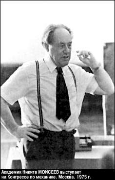

|
Новая газета от 6.03.2000г.  Горькая потеря последнего в столетии високосного года: 29 февраля умер академик Никита Моисеев. Великий математик. Великий эколог. Светлый, настоящий Человек. Может быть, последний из могикан, из легендарного уже племени энциклопедических личностей в отечественной науке ХХ века, которые достойны стоять в одном ряду с именами Леонардо да Винчи, Ломоносова, Вернадского.Много-много лет назад с двумя дипломами — мехмата МГУ и авиационной академии им. Жуковского — он ушел на фронт. И вышел из пламени Великой Отечественной с тремя боевыми орденами и множеством не юбилейных медалей. С 1948 года возглавил группу траекторных расчетов в отделе главного конструктора реактивных авиационных торпед Диллона в НИИ-2. В это же время Моисеев прочел в МВТУ первый в СССР курс лекций «Теория движения управляемых ракет». Защиту этого курса в качестве докторской диссертации перечеркнули арест и осуждение его мачехи по 58-й статье. Моисеев попал под «запрет на профессию», который был снят лишь после смерти Сталина. Тогда он пришел на работу в вычислительный центр Академии наук СССР и вскоре стал заместителем его директора по науке. Возглавляемый им отдел сотрудничал с КБ Челомея, Королева, Янгеля, Сухого, с рядом НИИ авиационной и космической промышленности. Знакомство с Н. В. Тимофеевым-Ресовским и его работами стало, как теперь говорят, знаковым поворотом в научной судьбе Никиты Николаевича. «Я начал, — вспоминал он, — думать о возможности изучения биосферы... Единственным возможным путем исследования биосферы как целостной системы мне представлялось и представляется сейчас изучение ее с помощью моделей, объединенных в единую вычислительную систему». Он, его коллеги и ученики заложили основу такой системы в стране. В 1983 году американский астроном Карл Саган высказал мысль о самоуничтожении биосферы в случае мировой атомной войны и наступлении на планете «ядерной ночи» и «ядерной зимы». Но это была всего лишь гипотеза. Единственная в мире вычислительная система моделей, способная ее проверить, была тогда только в нашей стране, в ВЦ АН СССР. И такая работа была проведена научным коллективом под руководством Моисеева. Доклад о ее результатах стал мировой сенсацией. Так в его судьбе соединились два полярных, казалось бы, несоединимых начала: работа на оборонку и на решение самых что ни на есть мирных, экологических проблем. Среди факторов, сделавших всемирный ядерный апокалипсис практически невозможным, некоторые политики в числе первых называют эту работу. Да, он был великим ученым. Но прежде всего он был великим сыном России, великим ее гражданином. Последняя его работа «На пороге», опубликованная в только что вышедшем альманахе Российского культурного центра «Красные холмы», полна тревоги за судьбу родины. Прочтите отрывки из этого его завещания нам, остающимся на Земле, уходящим в новый век. Без него. Ким СМИРНОВ НИЗКО КЛАНЯЮСЬ ДОЛГОТЕРПЕНИЮ НАРОДА, К КОТОРОМУ ПРИНАДЛЕЖУ Завещание академика Никиты Моисеева Я прочел книгу талантливого молодого журналиста Василия Голованова «Махно». Книга читается очень трудно, хотя прекрасно написана и столь ярко воспроизводит накал ненависти и потенциал безумия, которые сопровождали первые годы революции, что погружает читателя в атмосферу кровавого ужаса, который пришлось пережить нашему народу. И то, что написано в этой книге, хочет это ее автор или нет, проецируется на современность, и читателя охватывает ощущение горя и безысходности, которые в те времена довелось пережить нашим людям. И ужас возможности повторения событий! Я низко кланяюсь долготерпению народа, к которому принадлежу, и его любви к родной и неласковой земле, ибо только им мы обязаны относительным спокойствием нашей современной жизни с ее нищетой и бесперспективностью. Но потенциал возмущения и ненависти тем не менее накапливается и может легко вспыхнуть тем костром ужасов, которые описаны в книге Василия Голованова. Пришло время обо всем этом хорошо подумать и, пока не поздно, упредить опасное развитие событий. Последнее мне кажется в принципе возможным. Я убежден, что пришло время для серьезного разговора, время общенациональной дискуссии — дальше откладывать невозможно. Точнее — очень опасно! Мы однажды должны решить, о каком «светлом будущем» мы можем думать. И сообразно которому мы должны действовать, подчинив этому будущему наши усилия, стремления и желания. Отсутствие путеводной звезды и политическое безволие смерти подобно! Многое уже говорилось и еще многое будет сказано о причинах крушения Советского Союза. Говорилось об искусственности самой конструкции государства, о внешних влияниях, о крушении идей коммунизма и многом другом. Наверное, в каждом из подобных высказываний есть доля истины. Но главная причина мне открылась при весьма неожиданных обстоятельствах. В марте 1992 года указом президента Б. Н. Ельцина был образован Совет по анализу критических ситуаций. В него вошли двенадцать членов Российской академии наук, а председателем был назначен я. Курировать деятельность совета было поручено Г. Э. Бурбулису, тогда второму лицу в государстве. К сожалению, несмотря на все наши потуги, совет так и не смог сделать что-либо полезного и в силу ряда объективных обстоятельств прекратил свою деятельность, хотя формально распущен не был. Тем не менее мне приходилось несколько раз встречаться с Г. Э. Бурбулисом и обсуждать возможную деятельность совета. И однажды я его спросил: а зачем все это понадобилось, имея в виду Беловежские соглашения. Бурбулис картинно поднял руки: «Как вы не понимаете — теперь над нами никого нет!» Вот она, истинная причина: все для обретения и сохранения власти! На грани 90-х годов, когда стали появляться разговоры об одномоментном переходе к рыночной экономике и открытии собственного рынка для международной экономической экспансии, то уже довольно много людей предупреждали, что мировой рынок просто сметет нашу экономику. Дело в том, что мы принципиально не можем по всем статьям быть конкурентоспособными благополучным странам. Достаточно сказать, что требуемые энергозатраты в нашей стране в три, четыре, а то и в пять раз выше, чем в Европе и США. Этот факт объективный, и экономисты не могут его игнорировать! Все то, чего мы так опасались, — проигрыш «холодной войны», разрушение государства и уничтожение промышленности, состоялось! Я никогда не поверю, что более или менее грамотные экономисты гайдаровской команды не представляли себе последствий своих решений. В 1992 году я еще верил, что происходящее — результат некоторой ошибки, что это проявление некомпетентности. Но теперь я убежден, что прав Джефри Сакс, который утверждал, что все действия людей типа Гайдара были вполне целенаправленными и заранее продуманными. В результате — деградация страны и накопление потенциала народной ненависти! Итак, мы оказались на пороге того этапа истории, который легко может стать кровавым хаосом, ибо нельзя долго держать 150-миллионный народ в шкуре побитой собаки. Мы сегодня занимаемся штопаньем дыр и стараемся залечить болячки, которые сейчас в данный момент мешают нам жить. Подобная деятельность необходима. Но нельзя не думать и о долгосрочных планах, о стратегических замыслах, ибо без них штопанье дыр приведет лишь к новым дырам и только ускорит наше движение в небытие. И я надеюсь, что этот факт постепенно доходит и до сознания политиков. Но очень своеобразно. Начинают говорить о национальных целях. Предлагают заняться их разработкой. Может быть, это и необходимый этап развития самосознания общества, но как-то при этом забывают, что национальные цели не придумываются, не привносятся извне, а рождаются в самом народе — это проявление объективных стремлений нации... Есть несколько положений, которые, как мне представляется, уже поняты нацией. Прежде всего никого уже не способны воодушевить разговоры о державности или «Третьем Риме»: имперское мышление раз и навсегда покинуло первые строчки национальных приоритетов. Но есть одно, что всегда остается с нами. Это огромная неуютная и суровая часть Земли, которая нам определена судьбой, на которой нам предстоит жить, и главная проблема — как обустроить эту десятую часть планеты, чтобы на ней могла снова развиваться спокойная и умная жизнь, лишенная системных кризисов и отвечающая тем цивилизационным установкам, которые за тысячелетия жизни на этой земле стали нашим alter ego. И мне представляется, что подобное утверждение отвечает стремлениям большинства населения нашей страны. Если в советские времена хотя бы говорилось о некоторых общих целях развития, то теперь мы вообще изображаем слепых, бредущих даже без символического поводыря. И я думаю, что сегодня кризис дошел до некоторого предела, за которым начинается необратимая стагнация. И кажется, что этот факт доходит до сознания и народа, и большинства неангажированных политиков. Всему народу нужна ясность того, что мы хотим, и стратегия желаемого результата. Общество жаждет покоя и стабильности. Народ бесконечно устал. И в то же время людям нужен не только покой. Им необходимо, чтобы их жизнь была осмысленна. Но, увы, такого добиться не удастся без трансформации правительства и конституции. Я бы не побоялся сказать — без смены политических элит. И это необходимо отчетливо объяснить или даже разъяснить обществу, предложив некоторую достаточно простую схему. И не идеальную схему общества, не некую новую утопию, а показать то жизненное устройство, которое было бы способно обеспечить более или менее комфортное и осмысленное существование нашим людям на нашей земле. Другими словами, надо сказать людям правду! Без плюрализма форм собственности и главным образом без симбиоза кооперативной, частной и государственной собственности на базе широкой демократизации никакое современное государство не может рассчитывать на сколько-нибудь быстрое развитие, на более или менее благополучное будущее, а тем более на восстановление почти до конца разрушенного народного хозяйства. Система управления, то есть конституция и структура управляющих органов, должна быть изменена так, чтобы во главе страны находился не просто «гарант конституции», но и правительство, отвечающее перед народом, а не перед «гарантом». А времени для такой трансформации у нас совсем не остается. Стук шахтерских касок это показывает. Мне очень хочется верить, что кровавых событий, расстрелов Думы и других катаклизмов подобного рода уже больше не будет. Но смена политических элит, приход к власти людей, способных ценить нашу цивилизацию, любить нашу землю, способных изменить «курс», необходимы. Иначе — продолжение пути в небытие, нарастание процесса деградации во всех сферах. Надо приложить все усилия, чтобы эта смена произошла, но произошла бескровно, чтобы сработал демократический принцип естественной замены властных структур. Перемены не произойти не могут: вода доведена до кипения. Но как сделать, чтобы они смогли произойти в нужном ключе, чтобы костер страстей не сжег остатки государства? И им должны предшествовать дискуссии и общенародное свободное обсуждение. Нация должна сбросить с себя ощущение «безнадеги». Оно должно быть заменено ВЕРОЙ, верой в собственные силы и возможности. А это и есть основная задача интеллигенции. И средств массовой информации, если они желают блага своему народу. 06.03.2000 |